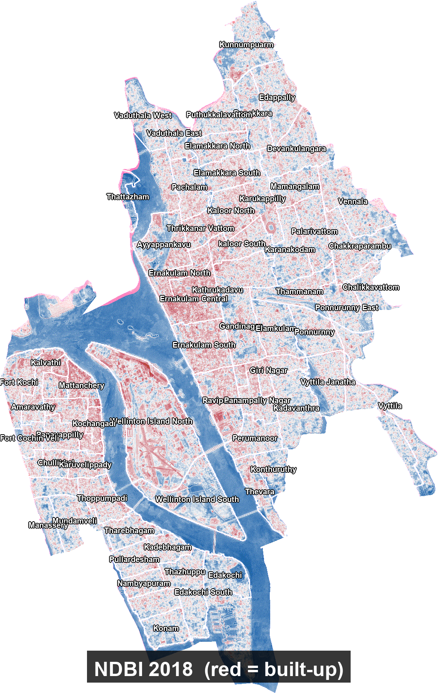

A satellite-based comparison of built-up expansion and surface-water stability in the Kochi Corporation area, using Sentinel-2 Surface Reflectance imagery over the same January–March window in 2018 and 2025.

NDBI (Normalized Difference Built-up Index) is a simple satellite-derived number that tells us how "built-up" a piece of land looks. It compares how much shortwave-infrared light a surface reflects versus near-infrared light — concrete, asphalt, and rooftops reflect strongly in shortwave-infrared but weakly in near-infrared, so built-up areas get positive NDBI values, while vegetation and water get negative values. Because the index runs from roughly −1 to +1, a pixel's NDBI value is effectively a "concrete-ness score" — higher is more urban.
MNDWI (Modified Normalized Difference Water Index) does the same kind of trick but for water: it compares green light reflectance against shortwave-infrared reflectance, and because water absorbs shortwave-infrared almost completely while reflecting green light, water bodies get strongly positive values, and dry land — especially built-up areas — gets negative values. Together, the two indices act like two different lenses on the same landscape: one highlights where the city has been poured in concrete, the other highlights where water sits on the surface.
Using cloud-free Sentinel-2 satellite images from the same time of year (January to March) in 2018 and 2025, we computed both indices pixel-by-pixel over the Kochi Corporation area, then took the average across the whole city for each year.
Taking the same seasonal window matters — Kochi's monsoon dramatically changes how much water is visible in any given month, so comparing a dry-season image to a monsoon image would show seasonal noise rather than real change. By sticking to Jan–Mar in both years, any difference we see reflects actual land-cover change, not weather. We then computed the change for each index by subtracting the 2018 value from the 2025 value — a positive change means the index went up (more built-up, or more water), and a negative change means it went down.
Our results showed that the average NDBI over Kochi went from −0.0654 in 2018 to −0.0427 in 2025, a change of +0.0228. At first glance, the negative values might look strange — surely a city should show positive built-up values? But Kochi is a coastal city dominated by the Vembanad backwaters, the Periyar river, its canals, and extensive coconut and mangrove vegetation, all of which pull the city-wide average toward the negative side. What matters is not the absolute value but the direction and magnitude of the change.
A +0.0228 rise is a clear, consistent signal: Kochi's land surface became measurably more built-up over the seven-year period. This is the same order of magnitude that published studies report for other growing Indian metros, so it fits Kochi's documented pattern of urban expansion along the Kakkanad, Edappally, and Vyttila corridors.
The MNDWI, on the other hand, barely moved: −0.1932 in 2018 to −0.1890 in 2025, a change of only +0.0042. The strongly negative baseline is expected — most of the corporation's area is land, not water, so the city-wide average is naturally negative even though Kochi's backwaters and canals are locally dominant features. The near-zero change is the more interesting story: at the scale of the entire corporation, surface water appears to have been essentially stable between the two years.
This does not mean no water changed — individual canals may have been filled in while others were restored or widened, and seasonal ponds come and go — but the gains and losses appear to have largely cancelled out when averaged across the whole city.
| Index | 2018 | 2025 | Change (2025 − 2018) |
|---|---|---|---|
| NDBI (built-up) | −0.0654 | −0.0427 | +0.0228 |
| MNDWI (water) | −0.1932 | −0.1890 | +0.0042 |
Read together, the two indices tell a coherent story about Kochi's recent urban trajectory. The city's built-up footprint grew modestly but unmistakably (+0.0228 in NDBI), while the overall water signal stayed flat (+0.0042 in MNDWI). This combination — positive NDBI change, negligible MNDWI change — suggests that Kochi's recent growth has come primarily through infill and densification on already-dry land, rather than through large-scale reclamation of its backwaters and canals.
If water bodies had been systematically converted to built-up surfaces, we would have seen MNDWI drop while NDBI rose, because the same pixels that lose water gain concrete. That is not what the numbers show.
Instead, Kochi appears to be growing inwards — filling gaps in its existing urban fabric, adding floors, densifying neighborhoods — while largely holding the line on its water bodies at the corporation scale. This is a notably more sustainable pattern of urban growth than what has been documented in several other Indian coastal cities, and it is the kind of result that makes the Kochi case worth discussing in the broader literature on urban-water interactions in rapidly growing South Asian cities.
The change maps generated from this analysis — showing pixel-level NDBI and MNDWI differences — allow us to move beyond the city-wide average and see exactly where these changes are concentrated. The strongest NDBI increases typically appear in the eastern and north-eastern suburbs, matching the known geography of Kochi's newer residential and commercial development, while the backwater margins show the most variable MNDWI signals. Together, the maps and the summary statistics give a complete picture: Kochi is a city that is clearly still growing, but doing so without — at least between 2018 and 2025 — substantially sacrificing its defining water landscape at the scale of the whole corporation.